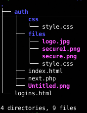
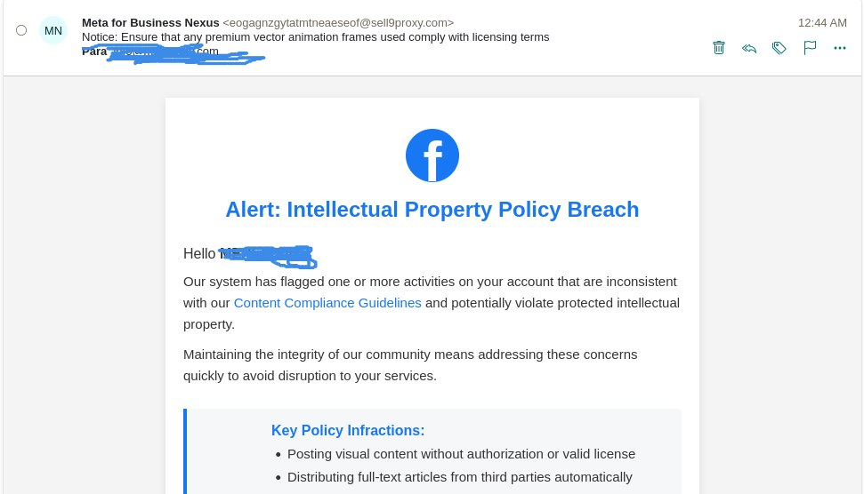

Operaciones General JP y SilentWarn: Dos Campañas de Phishing Conectadas por la Infraestructura
Investigación de threat intelligence sobre dos campañas de phishing activas en junio de 2025. General JP utiliza redirección multi-capa, Google Cloud Storage y exfiltración a Telegram. SilentWarn está construida en React con EmailJS, geofencing para Vietnam y ofuscación de herramientas de desarrollo. Aunque operan con tecnologías distintas, comparten patrones de infraestructura, fuentes de correos filtrados y mecanismos de exfiltración.
/índice_de_la_investigación +
00. Resumen de Inteligencia
En junio de 2025 identifiqué dos campañas de phishing activas que, aunque utilizan stacks tecnológicos diferentes, comparten patrones de infraestructura y fuentes de datos que sugieren una conexión operativa o, como mínimo, un ecosistema de atacantes que reciclan las mismas listas de correos filtrados. Este artículo documenta ambas campañas, las correlaciona con investigaciones previas del portafolio y extrae patrones de threat intelligence aplicables a la detección proactiva.
La Operación General JP es una campaña de phishing multi-capa que utiliza Google Cloud Storage como punto de entrada, una cadena de redirección con dominios intermedios, y un kit PHP que exfiltra credenciales a través de la API de Telegram. La Operación SilentWarn es una campaña más reciente construida con React y Create React App, que utiliza EmailJS y SMTPjs para la exfiltración de datos, implementa geofencing para redirigir a usuarios vietnamitas, y está alojada en Cloudflare Pages.
Este artículo conecta ambos casos con investigaciones previas del portafolio: la Threat Hunter Recollection, la Operación FakeWealth, y la red de Pig Butchering bybsusd.com. El hilo conductor es la metodología: pivotar sobre infraestructura, leer los errores del adversario y correlacionar patrones a través de campañas aparentemente independientes. El análisis de estas campañas se realizó desde un entorno de investigación blindado con la infraestructura de túnel ofuscado con WireGuard y proxy residencial para evitar alertar a los operadores.
01. Operación General JP: Phishing Multi-Capa con Exfiltración a Telegram
Descubrimiento: URLs en Caché y Listas de Correos Filtrados
El punto de partida fue una lista de URLs en caché que compartían un patrón común, utilizando Google Cloud Storage como infraestructura de entrada. Todas las URLs seguían una estructura donde el parámetro user contenía direcciones de correo electrónico obtenidas de filtraciones masivas:
La IP 185.80.129.110 está asociada a storage.googleapis.com. Al consultar los correos del parámetro user, confirmé que todos provenían de tres fuentes principales de filtraciones: logs de Alien Stealer, breaches de plataformas como Deezer, y combolists como Zacks2024. Este patrón —reutilizar bases de datos filtradas para alimentar campañas de spam— es consistente con lo documentado en la Threat Hunter Recollection (caso Rekrute y ShinyHunters), donde una filtración de datos se convirtió en el insumo para una operación de fraude masivo años después del breach original. La misma dependencia de datos filtrados aparece en la Operación FakeWealth, donde los atacantes usaban listas de correos comprometidos para alimentar sus campañas de spam financiero.
Cadena de Redirección Multi-Capa
El grafo de infraestructura mapea el flujo completo de redirección. El tráfico inicia en Google Cloud Storage y salta secuencialmente a través de múltiples dominios antes de llegar al destino final:

El generador de redirección dinámica utilizaba JavaScript para construir el siguiente destino en función de los parámetros de la URL. El parámetro encoded_value contenía un string en Base64 que, al ser decodificado, revelaba un identificador de campaña segmentado en varias partes:
Dependiendo del perfil de la víctima, el destino final variaba: algunos correos llevaban a una falsa página de FedEx, otros a un supuesto portal de noticias canadiense, y otros a una inmobiliaria fraudulenta cuya plantilla ni siquiera había sido modificada —los atacantes dejaron la URL de donde descargaron la plantilla original—. Si se omitía el parámetro, la redirección se frenaba y aparecía un mensaje emergente solicitando el parámetro faltante. Esto confirma que el sistema estaba diseñado para segmentar campañas por perfil de víctima usando el mismo backend.
El Servidor de Correo y Filemail API
Durante el análisis de las redirecciones, se identificó que el servidor de correo utilizado para el envío masivo de spam estaba impulsado por la API de Filemail (filemail.com). Los atacantes no utilizaban la API directamente, sino que ofuscaban los parámetros en strings segmentados y codificados que eran reconstruidos en tiempo de ejecución:
El último parámetro de la URL contenía el dominio con el que se disfrazaba el origen del correo (www.mechatecha1520.com), una técnica clásica de email spoofing para evadir filtros antispam. La URL intermedia contenía un extracto de la API de Filemail con todos los parámetros ofuscados en lugar de parsearlos directamente.
El abuso de servicios legítimos —Google Cloud Storage para alojar el script de redirección, Filemail API para el envío de correos, IPFS para enmascarar la IP del servidor— es una constante en campañas modernas de phishing. Este patrón es consistente con lo documentado en la Operación FakeWealth, donde los atacantes abusaban de Cloudflare, Google Cloud y NameCheap como capas de protección. La diferencia aquí es que General JP añadió una capa adicional: un servidor intermedio en Lituania sin dominio que actuaba como punto de entrega de contenido malicioso y, posiblemente, de malware.
El Kit de Phishing "General JP"
Uno de los hallazgos más valiosos fue la recuperación del archivo reservigt.com/japangenerals.zip. El contenido reveló la estructura completa de un kit de phishing genérico pero funcional, bautizado internamente como "General JP". La siguiente captura muestra la interfaz renderizada del archivo de registro logins.html expuesto en el servidor del atacante, funcionando como una bitácora centralizada donde el script de backend volcaba secuencialmente las credenciales robadas:

El correo que inicia la cadena de esta campaña suplanta a Meta for Business, utilizando una técnica de ingeniería social basada en la urgencia y el miedo ante una supuesta infracción de propiedad intelectual:

El backend next.php era el núcleo del fraude. Su lógica interna realizaba tres acciones críticas: escribir las credenciales en logins.html —visible en la captura anterior—, enviar una alerta en tiempo real a través de la API de Telegram, y redirigir a la víctima al sitio legítimo para mitigar sospechas.
El script también incluía funciones de reconocimiento y perfilado de la víctima:

El mensaje formateado en HTML que se enviaba a Telegram incluía un perfil completo de la víctima:
El kit implementa dos canales de exfiltración: el archivo logins.html como almacenamiento persistente en el servidor —visible en la captura de la bitácora—, y la API de Telegram como canal de notificación en tiempo real. Si se encontrara un kit con el token del bot de Telegram activo —las variables $user_id y $botToken estaban vacías en la muestra recuperada—, se podría acceder a todo el historial de víctimas. Este patrón de exfiltración dual es consistente con kits de phishing documentados por Trustwave y Unit 42 en campañas similares.
02. Operación SilentWarn: Phishing en React con Geofencing Vietnamita
Descubrimiento y Vector de Entrada
Apenas unas semanas después de documentar General JP, un nuevo correo de phishing llegó a mi radar. El remitente era eogagnzgytatmtneaeseof@sell9proxy.com —un dominio registrado desde diciembre de 2024 a través de one.com, un proveedor económico de hosting— y el enlace utilizaba un acortador de Rebrandly: rebrand[.]ly/WebSite22fc63. La campaña tenía poco tiempo activa: la única referencia pública era una denuncia aislada de principios de junio de 2025.
Infraestructura Técnica: React + EmailJS + SMTPjs
El enlace acortado redirigía a silentwarn-2569-formsubmit-5g6h7j8k-entries-9c0d1e2f.pages[.]dev, un sitio alojado en Cloudflare Pages. El HTML inicial revelaba una aplicación construida con React (Create React App) que cargaba smtpjs.com/v3/smtp.js —un cliente SMTP incrustado directamente en el frontend— y utilizaba EmailJS como servicio de envío de correos para la exfiltración:
A diferencia de General JP —que utilizaba un backend PHP tradicional con exfiltración a Telegram—, SilentWarn apostaba por una arquitectura completamente basada en JavaScript: React para el frontend, EmailJS para el envío de correos, y SMTPjs como cliente SMTP incrustado. El sitio también implementaba un sistema de respaldo: si el servicio principal de EmailJS fallaba, automáticamente conmutaba a un servicio secundario con credenciales diferentes.
Geofencing: Protegiendo al Atacante Vietnamita
El hallazgo más revelador de SilentWarn fue el código de geofencing. La aplicación consultaba get.geojs.io/v1/ip/geo.json para obtener la geolocalización del visitante y, si detectaba que la IP provenía de Vietnam (VN), redirigía inmediatamente a Facebook:
Esta técnica —redirigir a los usuarios del país de origen del atacante para evitar que sean víctimas de su propia campaña y, sobre todo, para proteger la infraestructura de ser analizada por investigadores locales— es un indicador de atribución consistente con actores de amenazas operando desde Vietnam. Los comentarios en vietnamita dispersos por el código fuente refuerzan esta hipótesis. Esta técnica de geofencing es conceptualmente similar a la que documenté en el análisis de la red de Pig Butchering, donde los atacantes redirigían a usuarios de ciertos países para proteger su infraestructura.
Adicionalmente, el sitio implementaba bloqueo de herramientas de desarrollo mediante un event listener que prevenía las teclas F12, Ctrl+Shift+I, Ctrl+Shift+J, Ctrl+Shift+C y Ctrl+U. También mostraba un splash screen de 6 segundos con un video a pantalla completa antes de cargar el contenido principal, una técnica de ofuscación para evadir análisis automatizados.
Flujo de Exfiltración: EmailJS + iplogger
El flujo de exfiltración de SilentWarn era más simple que el de General JP pero igualmente efectivo. La aplicación utilizaba EmailJS como servicio principal de envío, con un sistema de respaldo que conmutaba a credenciales secundarias si el servicio primario fallaba:
Los datos de la víctima se enviaban por correo a través de api.emailjs.com. Previamente, el sitio realizaba una captura de datos de geolocalización mediante un iplogger. La combinación de EmailJS como canal de exfiltración y SMTPjs como cliente de correo incrustado en el frontend representa una evolución respecto a los kits PHP tradicionales: toda la lógica de exfiltración reside en el cliente, lo que dificulta el rastreo del backend.
03. Correlación y Patrones entre Campañas
Aunque General JP y SilentWarn utilizan stacks tecnológicos diferentes —PHP con Telegram vs. React con EmailJS—, comparten patrones que las conectan dentro del mismo ecosistema de amenazas:
- Fuente de correos: Ambas campañas utilizan listas de correos obtenidas de filtraciones masivas (Alien Stealer, combolists, breaches de plataformas).
- Abuso de infraestructura legítima: Google Cloud Storage y Filemail API en General JP; Cloudflare Pages, EmailJS, SMTPjs y Rebrandly en SilentWarn.
- Geofencing como mecanismo de protección: SilentWarn redirige a usuarios vietnamitas; General JP segmenta el destino final según el perfil de la víctima.
- Exfiltración multicanal: General JP usa Telegram + archivo local; SilentWarn usa EmailJS primario + backup.
- Pereza operacional: En General JP, los atacantes dejaron la URL de la plantilla original sin modificar y el archivo Untitled.png sin renombrar. En SilentWarn, los comentarios en vietnamita y las variables de entorno de EmailJS quedaron expuestas en el código fuente.
Ambas campañas operan con infraestructura de bajo costo y alta rotación: dominios baratos (one.com), alojamiento en plataformas gratuitas (Cloudflare Pages, Google Cloud Storage), y servicios de exfiltración basados en APIs legítimas. Este patrón —infraestructura desechable alimentada por bases de datos filtradas— es el mismo que documenté en la red de Pig Butchering bybsusd.com y en la Operación FakeWealth. La diferencia es que estas campañas de phishing son más ágiles: se levantan en días, operan durante semanas y desaparecen cuando las listas de correos se agotan o los dominios son bloqueados.
04. IoCs Consolidados
| Campaña | Tipo | Valor |
|---|---|---|
| General JP | IP Servidor Spam | 185.80.129.110 |
| Dominio Redirección | yournextlvlredirect.com | |
| Dominio Redirección | mechatecha1520.com | |
| Endpoint Phishing | megalift-bn.xyz/mason/chameleon.php | |
| Kit de Phishing | reservigt.com/japangenerals.zip | |
| SilentWarn | Dominio Acortador | rebrand[.]ly/WebSite22fc63 |
| Dominio Phishing | silentwarn-2569-formsubmit-[...].pages[.]dev | |
| Remitente Spam | @sell9proxy.com | |
| Servicio Exfiltración | api.emailjs.com |
05. Conclusión
Las operaciones General JP y SilentWarn representan dos caras del mismo ecosistema de phishing moderno: campañas ágiles, de bajo costo, que abusan de infraestructura legítima y reciclan bases de datos filtradas para maximizar el alcance. La diferencia técnica entre ambas —PHP tradicional vs. React con EmailJS— refleja la diversidad de stacks que los atacantes están adoptando, pero los patrones subyacentes son los mismos.
Para el threat hunter, la lección es clara: los IoCs específicos de cada campaña caducan rápido, pero los patrones de infraestructura —abuso de Google Cloud Storage, Cloudflare Pages, APIs de correo legítimas, geofencing para proteger al atacante, y reutilización de listas de correos filtrados— son atemporales. La detección proactiva debe pivotar sobre estos patrones, no sobre los dominios individuales.
Este artículo se suma a la serie de investigaciones documentadas en la Threat Hunter Recollection, conectando casos de phishing con fraudes financieros, Pig Butchering y campañas de malware. El hilo conductor sigue siendo el mismo: la infraestructura es el talón de Aquiles del adversario.
/¿Te interesa el análisis de campañas de phishing y threat intelligence?
Estas dos campañas son parte de una serie de investigaciones que abarcan OSINT, ingeniería inversa y deconstrucción de infraestructura criminal. Cada caso revela patrones que trascienden los IoCs individuales.
06. Referencias
- Threat Hunter Recollection — Crónica de investigaciones de threat intelligence (tty503.com)
- Operación FakeWealth — Inteligencia de Amenazas sobre cmdxcapital (tty503.com)
- Red de Estafa "Pig Butchering" — Fake Crypto Exchange Multi-Dominio (tty503.com)
- Infraestructura Ofuscada: WireGuard sobre TCP Falso + Proxy Residencial (tty503.com)
- ANY.RUN — Reporte de comportamiento similar con redirección y descarga de archivos
- Filemail API Documentation
- EmailJS — Servicio de envío de correos desde el frontend
- SMTPjs — Cliente SMTP para JavaScript